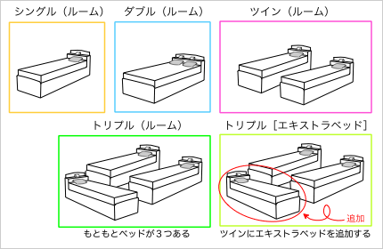

ホテルと旅館
有料の宿泊施設は、大きくホテルと旅館に分けられる。
ホテルと旅館の違い
ホテルと旅館
| 和風／和式
わふう／わしき | 洋風／洋式
ようふう／ようしき |
| ＊一般の家と同じくらいの大きさ。一般の家の一部を利用していることもある |
| 大きい | 旅館／日本旅館
りょかん／にほんりょかん | ホテル
hotel |
| 小さい* | 民宿
みんしゅく | ペンション
pension |
宿泊施設のうち、和式（日本式）のものを旅館、または日本旅館といい、洋式（ヨーロッパ式）のものをホテルという。
- 和式：旅館
-
- 和風建物／低層のビル
- 内装は和風で畳に布団で寝る
- 食事は和食（日本料理）
- 従業員は和装（着物など）
- 風呂は共同浴場（部屋にバスがない）
- 部屋にトイレがない場合もある
- 洋式：ホテル
-
- 中・高層のビル
- 内装は洋風でベッドで寝る
- 食事は洋食（西洋料理）
- 従業員は洋装
- 部屋にバスやシャワーがついている
- 部屋にトイレがついている
民宿とペンション
自宅の一部を利用するなどした小規模な宿泊施設を民宿という。また、特に洋式の施設をペンションという。民宿は観光地に、ペンションはリゾート地に多い。
また、宿泊設備を備えたレストラン（フランス料理を提供する場合が多い）をオーベルジュという。大半は宿泊施設としては小規模なもので、主に観光地やリゾート地に多い。
観光ホテル／温泉ホテル
温泉地などでは、和風の内装で和食（日本料理）を提供するが、「ホテル」と名乗る宿泊施設が少なくない。このような宿泊施設は観光ホテルや温泉ホテルという。
ホテルについて
洋式の宿泊施設をホテルという。以下、ホテルやホテルの客室の種類について説明する。
ホテルの種類
- シティホテル
- 都市部にある大規模なホテル。スタンダードで１人１泊10000〜20000円程度のところが多いが、30000〜40000円以上のところもある（一流ホテル、高級ホテルなどと呼ばれる）。
- ビジネスホテル
- 出張などビジネスでの利用を想定したホテル。小規模なところが多いが、比較的大規模なところもある。一般に、シティホテルよりも安価で、シングルルーム１泊5000〜10000円程度のところが多い。
- ターミナルホテル
- 鉄道の駅の近く、または、通路などで駅と直結されたホテル。規模やランク（料金）は様々である。
- エアポートホテル
- 空港や飛行場の近くにあるホテル。空港とホテルの間を無料のシャトルバスで結んでいることが多い。規模やランク（料金）は様々である。
- 観光ホテル／温泉ホテル
- 温泉地などにあるホテル。和風の内装で和食（日本料理）を提供するところが多い。
- リゾートホテル
- 観光地やリゾート地にあるホテル。一般に、洋風の内装で西洋料理を提供し、家族向けの大きな客室がある。
- カプセルホテル
- 駅前や繁華街などにある、ごく狭い個室を提供する簡易宿泊施設。１泊3000円程度と安価なため、主に経済的に余裕のない層や飲みすぎて家に帰れなくなった人が利用する。
- ラブホテル／レジャーホテル
- （主に）男女が特殊な行為をするために利用するホテル。
ホテルの部屋の種類
ホテル（カプセルホテルやラブホテルを除く）の部屋（客室）は、部屋数やベッド数、ベッドの種類、ランク（料金）などにより、次のような種類がある。
ホテルの部屋の種類
| 種類 | 部屋数 | ベッド数 | ベッド | 定員 | ランク（例） |
※トリプル以上の客室があるホテルは少ない
※客室ごとのランクは、ホテルによって様々な呼び方がある |
| シングル | １ | １ | シングル／セミダブル | １ | エコノミー
↓
スタンダード
↓
コンフォート／スーペリア／デラックス
↓
エグゼクティブ［最高級］ |
| ダブル | １ | ダブル／クイーン | ２ |
| ツイン | ２ | シングル／セミダブル | ２ |
| トリプル | ３ | シングル／セミダブル | ３ |
| フォース | ４ | シングル／セミダブル | ４ |
| ファミリー | ２〜 | さまざま | ４〜 |
| スイート | ２〜 | ２〜 | クイーン／キング | ２〜 | セミ／ジュニア
↓
スタンダード
↓
コンフォート／スーペリア／デラックス
↓
エグゼクティブ
↓
ロイヤル／インペリアル［最高級］ |

なお、トリプル以上の客室があるホテルは少ないため、１室に３名で宿泊するときは、ツインルームにエキストラベッド（追加ベッド）を入れることが多い。
参考：ベッドの大きさ
| 名称 | サイズ（横幅） | サイズ（縦の長さ） |
| シングルベッド | セミシングル | 80〜90cm | 190〜200cm
200〜220cm（→ロングベッド） |
| シングル | 90〜100cm |
| ワイドシングル | 100〜120cm |
| ダブルベッド | セミダブル | 120〜140cm |
| ダブル | 140〜150cm |
| ワイドダブル | 150〜160cm |
| クイーンベッド | 160〜180cm |
| キングベッド | キング | 180〜200cm |
| ワイドキング | 200cm〜 |
旅館について
和式の宿泊施設をホテルという。以下、ホテルやホテルの客室の種類について説明する。
旅館の種類
- 観光旅館
- 観光地にある旅館。
- 温泉旅館
- 温泉地にある旅館。
- 料理旅館／料亭旅館／割烹旅館
- 料理の提供に重点を置いた旅館。旅館としてだけでなく、料亭や割烹（宿泊なし）としても営業している場合も多い。
- 駅前旅館／ビジネス旅館
- 駅前や繁華街などにあり、主にビジネス利用を想定した旅館。小規模で設備も整っていないところが多いが、安価なため連泊などに向く。
旅館の部屋の種類
旅館の部屋は、旅館ごとに様々な広さのものがあるが、設備によっておおよそ次のように分けることができる。
旅館の部屋の種類
| 名称 | 床 | 寝具 | 説明 |
和室
わしつ | 畳 | 布団 | 最も一般的なタイプの客室 |
洋室
ようしつ | フローリング | ベッド | ツインルームが一般的だが、洋室のない旅館も多い |
和洋室
わようしつ | フローリング／畳 | 布団／ベッド | ツインのベッドルームに畳の部屋がついている場合が多い |
客室はランク（料金）によって、一般客室、特別室、貴賓室に分けられる。
- 一般客室
- 通常のランクの客室
- 特別室
- 一般客室より高級な客室。部屋が広く、内装や調度品が豪華なほか、部屋に温泉や露天風呂がついている部屋もある。また、食事も一般客室より豪華で高級なものになる。
- 貴賓室
- 一般に、その旅館の中で最も高級な部屋。
なお、特別室や貴賓室は、独立したひとつの建物になっている場合がある。このように旅館の敷地内にあるが、他の部分からは独立しているものを「離れ」という。